DEVELOPMENT RELEASE · NO LIVE PUBLICATION
Noteworthy News, built around the journalism.
Open working preview → · Release notes & evidence · Publishing guide
The before images show the production baseline. The after images show the isolated release with saved public records. The publication dates remain the original dates; newsletter tests send no messages.
Front page
Reading on a phone
Before · mobile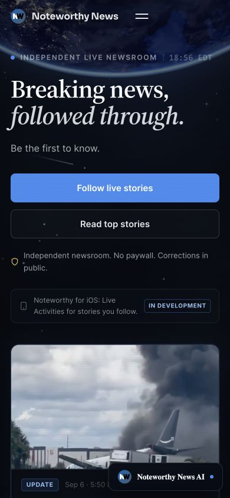
After · 390px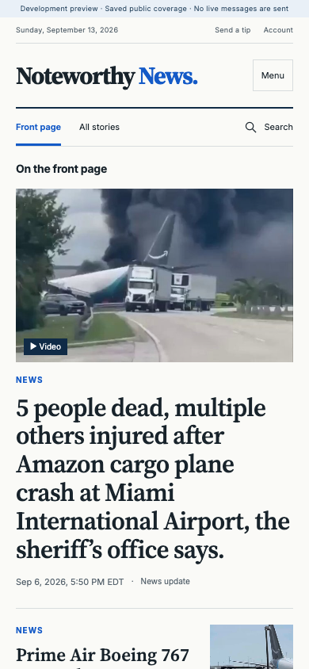
Five results means five results
Before · stale load-more button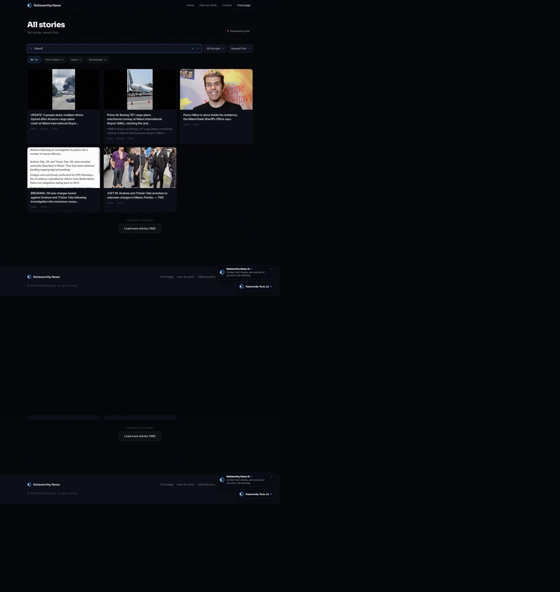
After · matching count, no extra page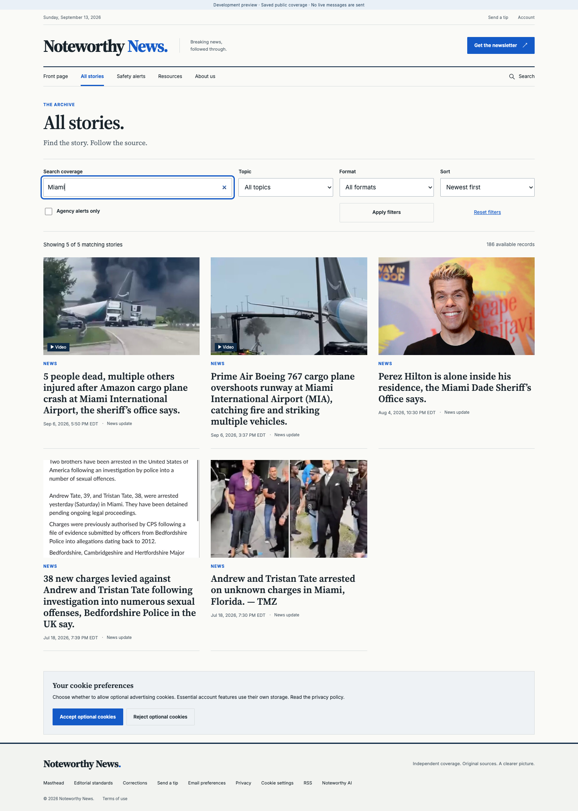
Complete articles and transparent alerts
News update · complete title, source trail and correction action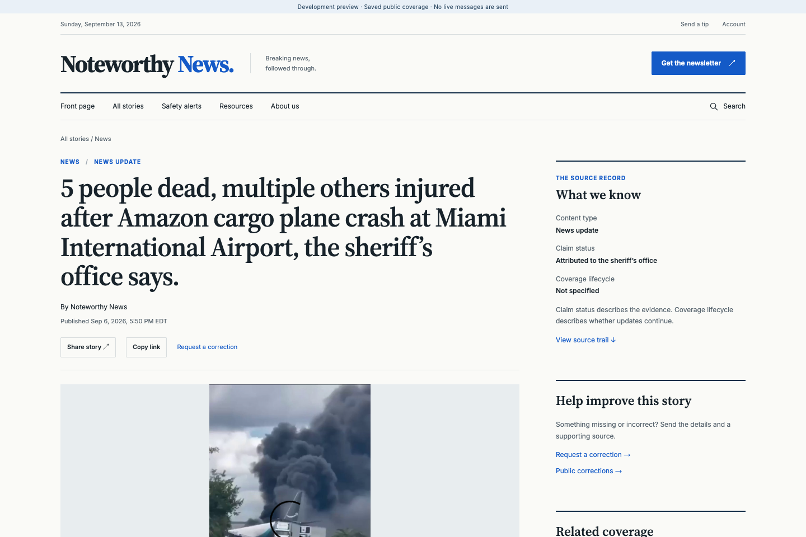
USGS · resolved record and agency attribution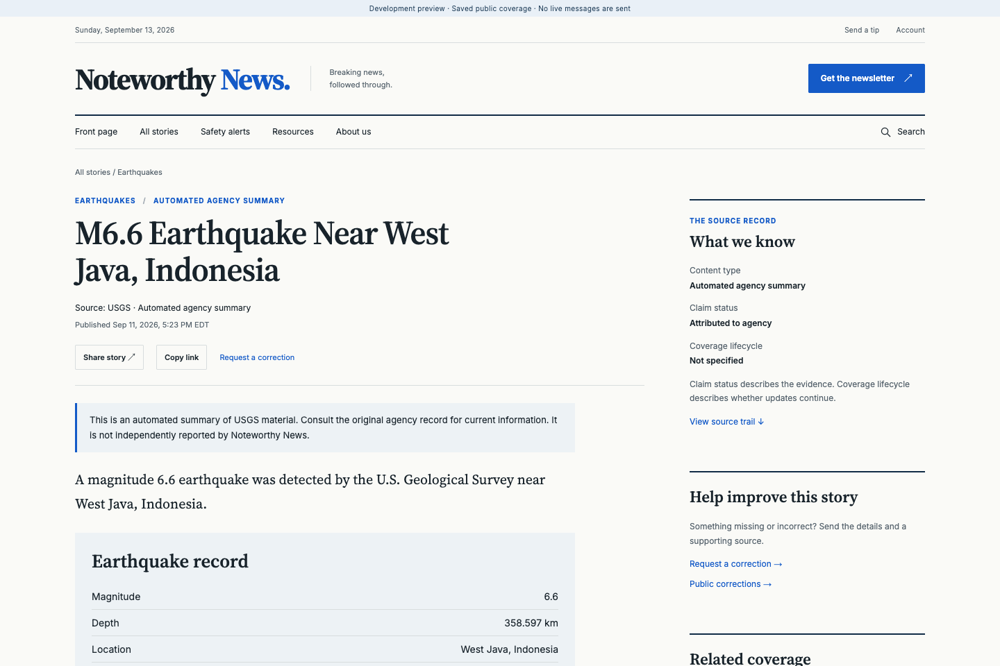
All five requested widths were reviewed. See the independent review for limitations, initial findings, focused follow-up checks and performance conditions.
The story so far · second iteration
Open the source briefings → · Competitive strategy and pilot plan
Three connected source briefs put changes, evidence and unknowns together. These are clean viewport captures; publication dates remain unchanged.
Briefing · latest source context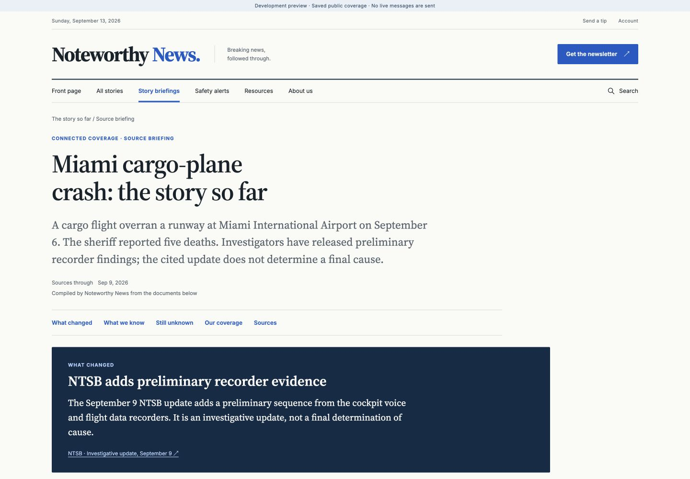
Evidence · source links and uncertainties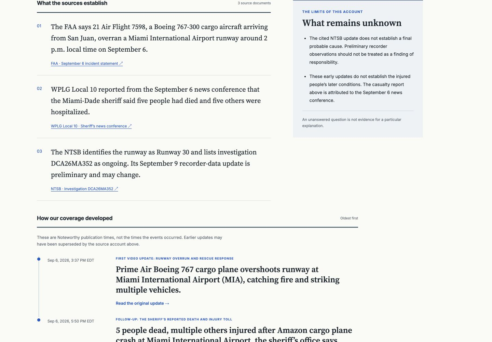
Briefing · 390px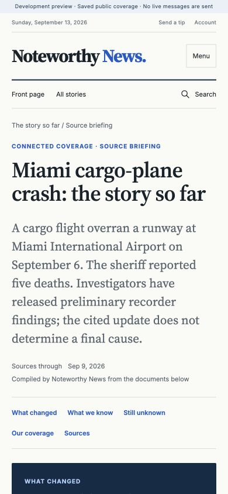
Reading · 390px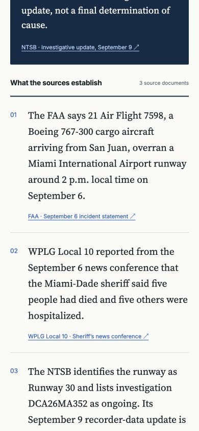
Inside the Story · a source archive readers can explore
Open the visual feature → · Implementation and validation · Source audit
Preserved revisions · actual USGS origin versions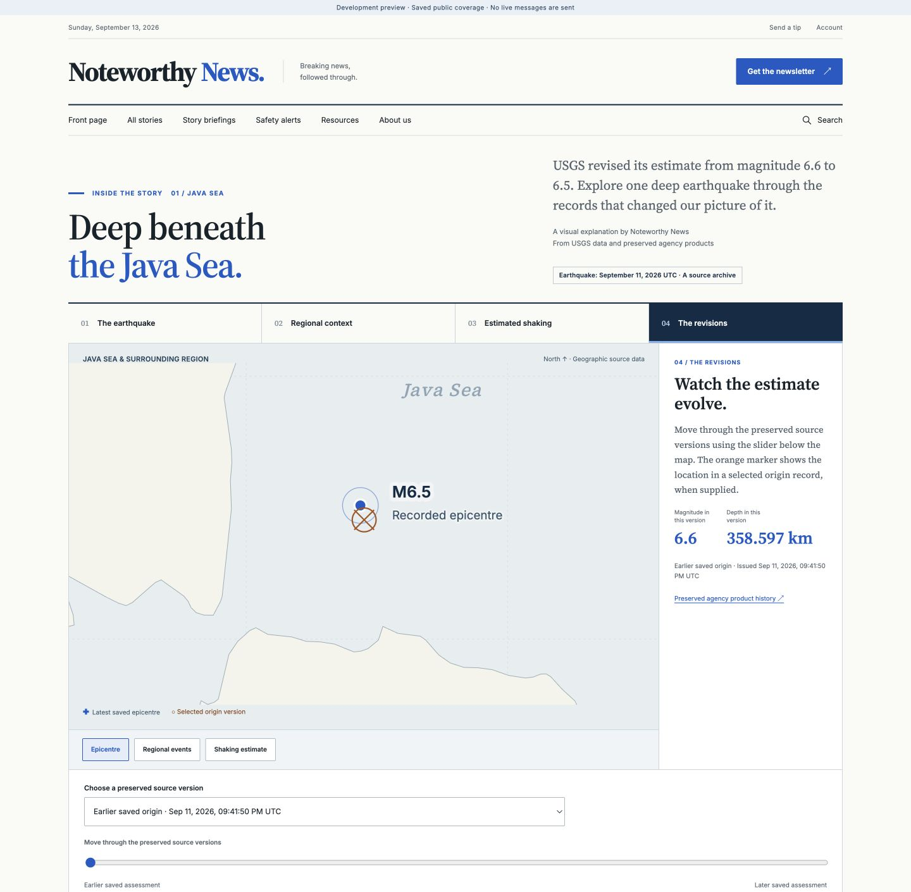
Estimated shaking · actual supplied grid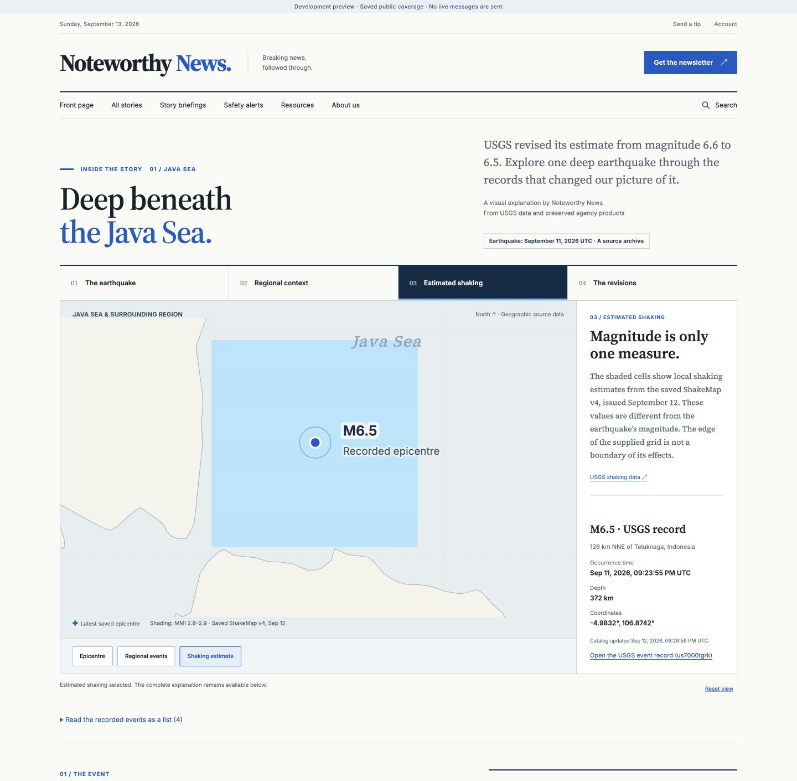
Visual story · 390px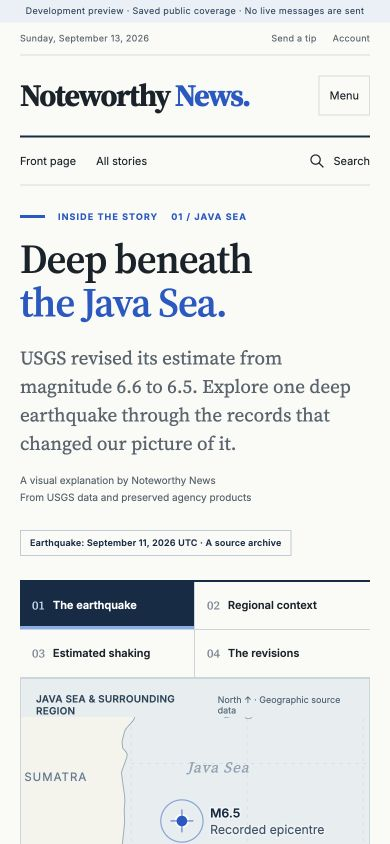
Source selection · 390px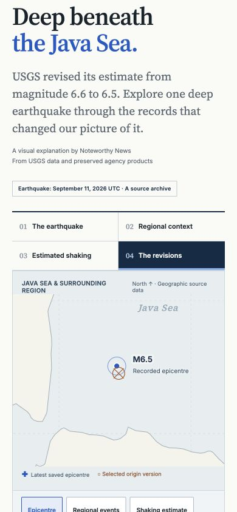